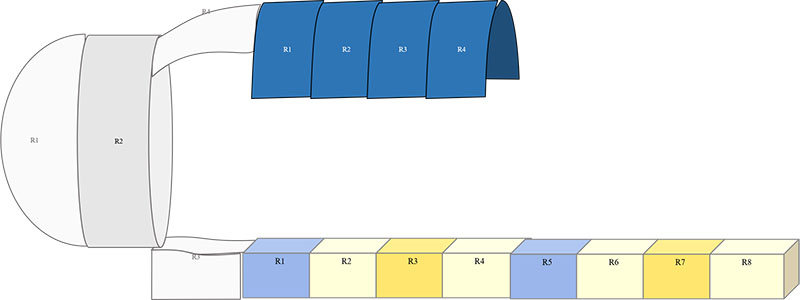
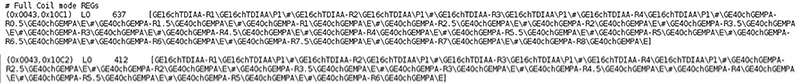
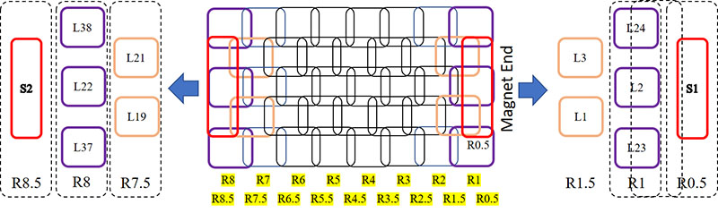
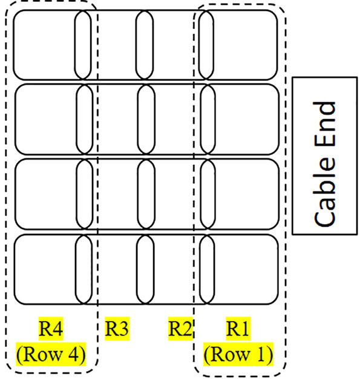
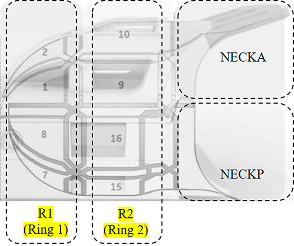
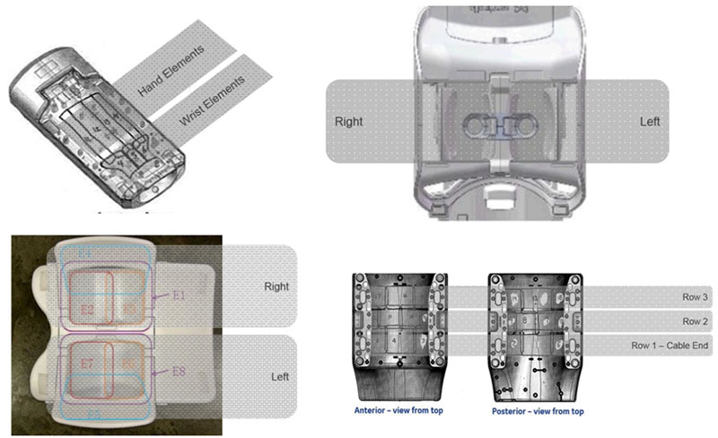
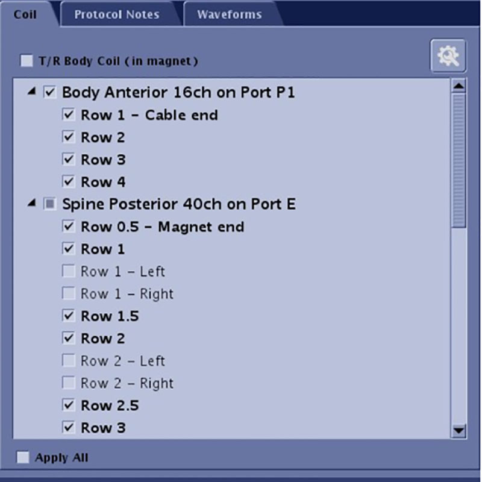

- 00000018WIA30B82040GYZ
- id_20130102.7
- Apr 24, 2020 12:36:13 AM
Auto coil prescription coil configurations
Receive element groups
The elements within a coil are typically related to each other based on physical characteristics of the coil and customer use cases. In a static coil configuration, coil configurations were statically defined as combinations of these elements. For dynamic coil configuration, the elements are collected in "Receive Element Groups" (REG)s based on the physical or use case characteristics.
- Rows (e.g. PA and AA coils)
- Columns (e.g. rotatable coils such as AIR AA)
- Rings (head coils)
- Left vs right (e.g. breast coils)
- Smaller segments such as the bill on the HNA coil
- Other groupings as dictated by the coil

The dynamic coil configurations are then built from these REG building blocks.
Parts of a dynamic coil configuration
A dynamic clinical coil configuration includes a local (imaging) coil mode and full coil mode.The full coil mode is dynamically generated using all of the possible Receive Element Groups (REG)s contained in the coils that are connected, enabled by the user, and that can be acquired simultaneously. The full coil mode is used by the auto coil calibration in prescan to determine sensitivity data for all coil elements. REGs used in the full mode are stored in the DICOM tag (0043, 10C1).
The local (imaging) coil mode is dynamically generated using the REGs selected by the Auto Coil Prescription (ACRx) algorithm or from the manual mode user interface (research and service only). It is automatically recomputed as needed based on changes to the prescription and whether a new auto coil calibration is acquired. REGs used in the local mode are stored in the DICOM tag (0043, 10C2).

REGs for some common coils
Below are the REGs for some common coils.




How to find a list of receive element groups

REGs in bold are those that the ACRx algorithm would select.
The REGs can also be listed using the command line utility: coilInfo getConnectedRegs.
|
Cdata_reg_name = GE1chHead Cdata_reg_desc = Bird Cage Cdata_reg_uid = GE1chHead;GE1chHead;P1 Cdata_service = 0 Cdata_plug_name = GE1chHead Cdata_port_name = P1 Cdata_plug_desc = Head T/R |
Cdata_reg_name = GE40chGEMPA-R2.5 Cdata_reg_desc = Row 2.5 Cdata_reg_uid = GE40chGEMPA-R2.5;GE40chGEMPA;E Cdata_service = 0 Cdata_plug_name = GE40chGEMPA Cdata_port_name = E Cdata_plug_desc = Spine Posterior 40ch |
|
Cdata_reg_name = GE40chGEMPA-R0.5 Cdata_reg_desc = Row 0.5 - Magnet end Cdata_reg_uid = GE40chGEMPA-R0.5;GE40chGEMPA;E Cdata_service = 0 Cdata_plug_name = GE40chGEMPA Cdata_port_name = E Cdata_plug_desc = Spine Posterior 40ch |
Cdata_reg_name = GE40chGEMPA-R2 Cdata_reg_desc = Row 2 Cdata_reg_uid = GE40chGEMPA-R2;GE40chGEMPA;E Cdata_service = 0 Cdata_plug_name = GE40chGEMPA Cdata_port_name = E Cdata_plug_desc = Spine Posterior 40ch |
|
Cdata_reg_name = GE40chGEMPA-R1.5 Cdata_reg_desc = Row 1.5 Cdata_reg_uid = GE40chGEMPA-R1.5;GE40chGEMPA;E Cdata_service = 0 Cdata_plug_name = GE40chGEMPA Cdata_port_name = E Cdata_plug_desc = Spine Posterior 40ch |
Cdata_reg_name = GE40chGEMPA-R2L Cdata_reg_desc = Row 2 - Left Cdata_reg_uid = GE40chGEMPA-R2L;GE40chGEMPA;E Cdata_service = 0 Cdata_plug_name = GE40chGEMPA Cdata_port_name = E Cdata_plug_desc = Spine Posterior 40ch |
|
Cdata_reg_name = GE40chGEMPA-R1 Cdata_reg_desc = Row 1 Cdata_reg_uid = GE40chGEMPA-R1;GE40chGEMPA;E Cdata_service = 0 Cdata_plug_name = GE40chGEMPA Cdata_port_name = E Cdata_plug_desc = Spine Posterior 40ch |
Cdata_reg_name = GE40chGEMPA-R2R Cdata_reg_desc = Row 2 - Right Cdata_reg_uid = GE40chGEMPA-R2R;GE40chGEMPA;E Cdata_service = 0 Cdata_plug_name = GE40chGEMPA Cdata_port_name = E Cdata_plug_desc = Spine Posterior 40ch |
|
Cdata_reg_name = GE40chGEMPA-R1L Cdata_reg_desc = Row 1 - Left Cdata_reg_uid = GE40chGEMPA-R1L;GE40chGEMPA;E Cdata_service = 0 Cdata_plug_name = GE40chGEMPA Cdata_port_name = E Cdata_plug_desc = Spine Posterior 40ch |
Cdata_reg_name = GE40chGEMPA-R3.5 Cdata_reg_desc = Row 3.5 Cdata_reg_uid = GE40chGEMPA-R3.5;GE40chGEMPA;E Cdata_service = 0 Cdata_plug_name = GE40chGEMPA Cdata_port_name = E Cdata_plug_desc = Spine Posterior 40ch |
|
Cdata_reg_name = GE40chGEMPA-R1R Cdata_reg_desc = Row 1 - Right Cdata_reg_uid = GE40chGEMPA-R1R;GE40chGEMPA;E Cdata_service = 0 Cdata_plug_name = GE40chGEMPA Cdata_port_name = E Cdata_plug_desc = Spine Posterior 40ch |
Cdata_reg_name = GE40chGEMPA-R4R Cdata_reg_desc = Row 4 - Right Cdata_reg_uid = GE40chGEMPA-R4R;GE40chGEMPA;E Cdata_service = 0 Cdata_plug_name = GE40chGEMPA Cdata_port_name = E Cdata_plug_desc = Spine Posterior 40ch |